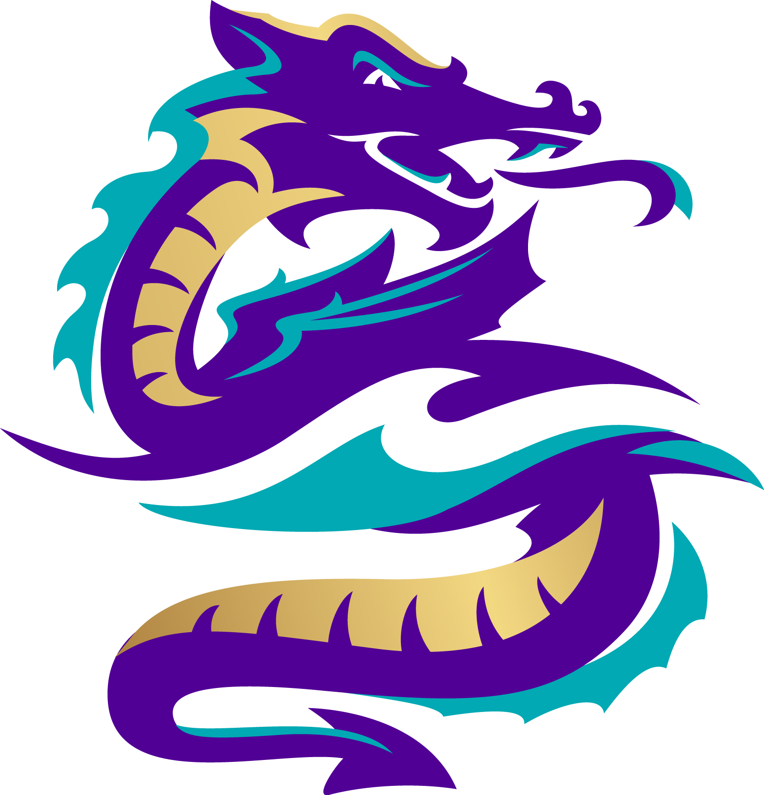

DAN REYNOLDS: Dan, es el séptimo de nueve hijos, nació el 14 de julio en 1987 en Las Vegas, hijo de Christine M. y Ronald Reynolds (ambos nativos de Nevada). En el año 2005 obtuvo el rango de Águila Scout. A los 19 años se ofreció voluntario a tiempo completo como misionero de La Iglesia de Jesucristo de los Santos de los Últimos Días en Nebraska durante dos años, donde escribió "I Bet My Life" reflexionando sobre la dura relación con sus padres. Su familia y Dan padecen de una enfermedad llamada Espondilitis anquilosante. Más información
BEN MCKEE: McKee (nacio el 7 de abril de 1985)se crio en Forestville, California, y se graduó de la preparatoria El Molino.1 Creció tocando la guitarra acústica y el violín, antes de elegir el bajo en el quinto grado. En la escuela secundaria, continuó el aprendizaje de la guitarra como miembro de un trío de jazz, lo que influyó en su decisión de asistir a Berklee College of Music. Mientras que en Berklee, McKee tocó, en una presentación, junto a los que serían sus futuros compañeros de banda, Wayne Sermon y Daniel Platzman. Más información
DANIEL WAYNE SERMON: Sermon nació el 15 de junio de 1984 en American Fork, Utah. Fue bautizado como miembro de La Iglesia de Jesucristo de los Santos de los Últimos Días. Wayne comenzó desde temprana edad a tocar el chelo y la guitarra. Desde que era niño estaba decidido a ser guitarrista. Su padre tenía un amplificador de audio, un tocadiscos y todos los álbumes de los Beatles en vinilo, a los que Sermon tanto le gustaba escuchar. También le gustaba el sonido de Tom Scholz (de Boston) y su acercamiento a los solos. Asistió a la Escuela de Música de Berklee, donde se especializó en doble interpretación de guitarra y composición; y finalmente se graduó en el 2008. Mientras estuvo en Berklee formó parte de un grupo de cinco guitarristas de jazz llamado The Eclectic Electrics. Más información
DANIEL JAMES PLATZMAN: Platzman nació el 28 de septiembre de 1986 en Atlanta, Georgia. Estudió en Berklee School of Music, donde obtuvo un grado en la composición de bandas sonoras. Mientras que en Berklee, Platzman toco en un concierto de Berklee Jazz Orchestra, la Orquesta de Jazz Urbano de Outreach y la Big Band de Berklee Rainbow, y recibió el Premio a la Mejor Vic Firth Musicianship y el Premio Rendish Michael en Film Scoring, Escuela de Música de Berklee.1 También toca la guitarra con la banda Imagine Dragons, con sus compañeros de banda Wayne Sermón y Ben McKee. Más información
ANDREW TOLMAN: Tolman nacido el 9 de enero de 1986 es un músico de estudio y compositor estadounidense. Es miembro de la banda de culto The Moth & The Flame. También fue miembro fundador de la banda de pop rock Imagine Dragons. En 2016-17, Andrew salió de gira con Mondo Cozmo como parte de la banda de acompañamiento junto con Drew Beck, Chris Null y James Gordon. Más información
AURORA FLORENCIA: Aurora Florence nacio el 5 de octubre, es una ex miembro de Imagine Dragons. Durante su tiempo con la banda tocó el teclado, el violín y proporcionó voces adicionales en 2008. Ella estaba con la banda cuando grabaron su primer EP, Speak To Me, y grabaronalgunos demos, luego dejaron el grupo. En 2013, lanzó un EP llamado It's Wonderful. La primera canción del EP, llamada "It's Wonderful", contiene letras deSpeak To Me, así como una melodía similar. Más información
ANDREW BECK:nacido el 23 de mayo de 1986, es un artista y músico estadounidense. Fue uno de los primeros miembros de Imagine Dragons, actualmente miembro de los Mellons, y también mantiene una carrera como ilustrador.Beck estudió diseño gráfico enla Universidad Brigham Young. Después de dejar la escuela, Beck trabajó para Undermanned en Ámsterdam, dirigido por el diseñador y diseñador tipográfico alemánErik Spinnaker. Después, Beck y su familia viajaron por el mundo cuando comenzó a trabajar como ilustrador independiente.Más información
DAVID LEMKE: es un ex miembro de Imagine Dragons. Tocó el bajo de 2008 a 2009, y estuvo con la banda cuando grabaron el EPSpeak To Mey el EP Imagine Dragons, pero se fue antes de que se lanzara elEP Imagine Dragons. También se le ve tocando el bajo durante una actuación deClouds en 2009. Más información
BRITANNY TOLMAN: Brittany Tolman fue miembro de Imagine Dragons. Tocó el teclado y cantó de respaldo de 2009 a 2011. Brittany dejó la banda el 29 de julio de 2011, para establecerse con su esposo, Andrew Tolman, quien dejó la banda el mismo día. Ella era un ex miembro de Mount Saint. Fue cantante, teclista y baterista del 2014 al 2015. Luego la banda se separó. Más información
TERESA FLAMINIO: conocida como DANiiVORY es una ex miembro de Imagine Dragons. Tocó el teclado y cantó coros para la banda después de la salida de los Tolman de agosto de 2011 a enero de 2012. Más información
RYAN WALKER: Piano, teclados, guitarra rítmica, mandolina, coros, pandereta (2012–2015)
WILL WELLS: es productor, compositor, músico, líder de banda e ingeniero de grabación. Se desempeñó como productor ejecutivo y co-escritor del álbum debut de Verve Records de Cynthia Erivo, Ch. 1 Vs. 1, y los dos álbumes de Republic Records de Anthony Ramos, The Good & The BadyLove and Lies. Conoció a Ramos mientras trabajaba como productor de música electrónica en el exitoso musical de Broadway ganador de los premios Tony, Grammy y Pulitzer, Hamilton. Will continúa prosperando en el mundo del cine y la televisión. Más información
ELLIOR SCHWARTZMAN:es un miembro de gira de Imagine Dragons, y estuvo de gira con ellos para el Evolve Tour. Toca el piano, los teclados, la guitarra rítmica, la mandolina y hace coros para la banda. Es el miembro más nuevo de la gira y comenzó a viajar con ellos en 2017.Más información
Paginá creada por : José Manuel Franco Quispe